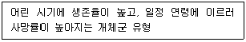

자연생태복원산업기사 (2006-09-10 기출문제)
1과목: 환경생태학개론
1. 파랑에 이ㅡ한 노줄의 정도가 매우 심한 암반 조간대의 중간부분에 가장 우점하고 있는 생물종은?
- 따개비류
- 해조류
- 진드기류
- 등각류
(정답률: 알수없음)

2. 제빙염의 잠재적 위험성이 아닌 것은?
- 식생의 파괴
- 지하수 염분오염
- 무척추동물의 종다양성이 증가
- 인근 하천오염
(정답률: 알수없음)
3. 해안 연안에 무절석회조류의 이상증식으로 인하여 발생하는 것으로, 어류자원 및 해조 자원에 심각한 피해가 발생한다. 우리나라는 주로 동해안에 많이 발생하며 연안자원에 피해를 입히고 있는 이 현상은?
- 적조현상
- 녹조현상
- 백화현상
- 청수현상
(정답률: 알수없음)
4. 생태계의 발달과 더불어 성숙됨에 따라 나타나는 현상으로 틀린 것은?
- 생태계 내 생물량의 증대
- 먹이그물의 단순화
- 생물 종다양성 증대
- 염류순환의 폐쇄성 증가
(정답률: 알수없음)
5. 두 개의 좋은 자원이 제한된 조건 아래서 무기한 같이 살지 못하고 또 같은 방식으로 환경과 상호작용 할 수 없는 법칙은?
- 경쟁배제(배타)의 법칙
- 내성 생태학 법칙
- 생태적 지휘 법칙
- 간섭경쟁 법칙
(정답률: 알수없음)
6. 다음 중 생물의 서식처를 의미하는 것은?
- niche
- path
- Fabitat
- ecosystem
(정답률: 알수없음)
7. 하천은 발원지 상류에서부터 하류인 하구에 이르기까지 생물성이 단계적으로 변하는데, 이 때 종의 수평구조가 나타난다. 이와 같은 현상을 무엇이라 하는가?
- 천이 계열
- 지리적 천이
- 지사적 천이
- 타발 천이
(정답률: 알수없음)
8. 생태적 천이(succession)에 관한 설명 중 틀린 것은?
- 일정기간 동안 일어나는 생물군집의 발달
- 천이는 일련의 각 과정들(stages)을 거쳐 진행된다.
- 2차천이는 1차천이 보다 빨리 진행되는 경향이 있다.
- 천이초기에는 P(생산)과 R(호흡)이 같은 양이다.
(정답률: 알수없음)
9. 생물학적 지표중에 대한 설명으로 틀린 것은?
- 내성범위가 넓은 종은 좁은 종보다 확실한 지표가 된다.
- 환경이 극단적으로 악화되었을 경우에도 생존이 가능한 종은 그 환경의 좋은 지표종이 된다.
- 대기중의 아황산가스가 0.03ppm을 초과했을 때 또는 0.2ppm이상일 때 지의류와 소나무는 각각 생존할 수 없어 대기오염의 지표종으로 이용할 수 있다.
- 희소종일수록 좋은 지표종이 된다.
(정답률: 알수없음)
10. 개체군내의 개체 공간분포(space distribution) 유형의 3가지 기본형에 해당되지 않는 것은?
- 균일형(unilorm distribution)
- 집중형(clumped distribution)
- 불규칙형(random distribution)
- 분산형(competition distribution)
(정답률: 알수없음)
11. 살충제 사용이 생태계에 미치는 유해성으로 틀린 것은?
- 유해생물 개체군 크기 제어
- 생물의 유전적 내성 증가
- 천적의 제거 및 새로운 해충의 출현 야기
- 잔류성 살충제의 생물간 이동 및 생물 증폭
(정답률: 알수없음)
12. 군집 내 종구성의 균일한 정도를 나타낸느 것으로 각 지수의 최대치에 대한 실제치의 비로서 표현하는 지수는?
- 우정도
- 균등도
- 종풍부도
- 종다양도
(정답률: 알수없음)
13. 지구온난화에 의해 나타나는 현상이 아닌 것은?
- 탄소순환의 변화
- 해수면 상승
- 고온성 농작물 생산성 증가
- 북반구 생물의 북한계선 남하
(정답률: 알수없음)
14. 생존곡선에 있어서 다음 설명이 적합한 유형은?

- 블록형
- 사선형
- 계단형
- 오목형
(정답률: 알수없음)
15. 다음 중 천이에 관한 식물상 교체(relay thoristics) 모델에 대한 설명으로 맞는 것은?
- 건조한 곳에서 진행된다.
- 일년생 초본군집에 다년생초본이 침입하여 다년생군집으로 변화한다.
- 이미 토양이 형성되어 있고 일부의 식물체가 존재하고 있는 상태이기 때문에 전이의 진행속도가 빠르다.
- 물에서부터 시작되는 천이계열 모델이다.
(정답률: 알수없음)
16. 다음 식물 중 특성이 다른 식생대에 속하는 종은?
- 매기부들
- 갈대
- 생이가래
- 벗풀
(정답률: 알수없음)
17. 농업생태계에서 작물생산을 위해 투여되는 보조에너지로 가장 거리가 먼 것은?
- 태양광
- 비료
- 농기계
- 가축의 힘
(정답률: 알수없음)
18. 연안생태계의 오염에 따른 복원대책으로 틀린 것은?
- 갈대는 연만생태계의 유기를 공급 기능원으로서 갯벌 생산성을 증대시키는 역할을 하므로 갈대밭을 조성토록 한다.
- 해만침식이 발생하는 지역은 석축을 쌓아 지속적인 토사유실을 방지하도록 한다.
- 담수가 유입되는 장소를 택하여 서식지를 조성한다.
- 갯벌유입 오ㆍ폐수에 있어서는 생활하수 및 축산폐수, 농업용수가 대부분이므로 정화대책을 수립한다.
(정답률: 알수없음)
19. 생태계의 구성요소 및 기본원리의 설명 중 틀린 것은?
- 생태계의 기본과정은 독립 영양자와 종속 영양자로 구성된다.
- 초식동물은 1차 소비자, 인간을 포함한 육식동물은 2차 소비자에 해당한다.
- 분해자는 동ㆍ식물을 분해함으로써 원형질에 결합되어 있는 원소들을 무기환경으로 돌아가게 하는 역할을 담당한다.
- 기능적인 구성요소 중 생물간의 먹고 먹히는 관계를 표현한 것으로 실제로는 복잡한 망상구조를 갖는 것을 ‘제어(control)'라 한다.
(정답률: 알수없음)
20. 습지생태계에 대한 설명 중 틀린 것은?
- 육상생태계와 수생태계 사이의 전이지대이다.
- 계절적 수위 변동 구간은 습지로 보지 않는다.
- 수문, 토양, 식생이 습지를 판별하고 분류하는 주요지표이다.
- 습윤 상태를 유지하면서 특별히 그 상태에 적응된 식생이 서식하고 있는 곳이다.
(정답률: 알수없음)
2과목: 환경학개론
21. 다음 중 환경을 구성하는 식생형을 결정하는 가장 중요한 요인은?
- 지형
- 기후
- 모양
- 위도
(정답률: 알수없음)
22. 개체군의 생장률을 표시하면 dN/dt = rN(K-N/K)이다. 이 것을 근거로 개체군 생장율(dN/dt)이 최대가 되는 개체군의 크기(N)는? (단, K는 100, r은 1.0으로 한다.)
- 1
- 50
- 95
- 99
(정답률: 알수없음)
23. 다음 중 자연환경보전기본계획에 포함되는 내용이 아닌 것은?
- 자연환경의 현황 및 전망에 관한 사항
- 생태축의 구축ㆍ추진에 관한 사항
- 자연환경보전을 위한 주요 추진과제에 관한 사항
- 자연환경 연구지원에 관한 사항
(정답률: 알수없음)
24. 생태기반이 되는 지형의 변동을 최소화함으로써 개발 이후의 시간과 비용을 절감할 수 있다. 대지면적이 50만m2인 단지를 조성하려는 곳에 절성토 면적이 6만m2일 때 지형변동비율은?
- 5%
- 12%
- 40%
- 82%
(정답률: 알수없음)
25. 야생동물 이동통로 조성 사례가 아닌 것은?
- 도로 밑으로 터널을 설치
- 도로 위로 양 능선부를 연결하는 육교를 설치
- 공원 사이에 가로수를 식재
- 도로변에 축구를 설치
(정답률: 알수없음)
26. 다음 중 해안환경 관리방안의 친환경적인 관리지침을 토대로 한 규제지침 중 건축물의 기준지침으로 타당하지 않은 것은?
- 해안으로의 조망축 상 또는 조망관리지역의 건축물은 입언차폐도 규제
- 주요 조망점에서 해안으로의 조망을 고려하여 지역별 건축물 높이, 형태 등 규제
- 해안선과의 거리에 따른 지역별 차이에 관계없이 건축물의 높이, 형태, 규제기준 획일화
- 기존 어촌마을 인근의 건축물 규모, 높이, 형태 등은 기존 건축물과 조화를 고려
(정답률: 알수없음)
27. 녹지자연도에 대한 설명으로 틀린 것은?
- 식물군락의 종조성을 기반으로 녹지성과 자연성을 고려한다.
- 0~7 등급으로 구분한다.
- 5등급은 완충지역으로 구분하고 잔디, 갈대조림 등의 초원조립지, 유령림 등이 포함된다.
- 식생과 토지이용 현황에 따라 녹지공간의 상태를 등급화한 것이다.
(정답률: 알수없음)
28. 다음 중 토지환경성 평가의 기준으로 사용될 수 있는 도연 중 성격이 틀린 것은?
- 임상도
- 토지 피복 분류도
- 수변구역 분포도
- 경사도
(정답률: 알수없음)
29. 국토환경성평가도의 평가지역에 해당되지 않는 것은?
- 산림지역
- 농경지역
- 도시지역
- 해안지역
(정답률: 알수없음)
30. 도시지역에서 비오톱의 가치와 거리가 먼 것은?
- 생태학적 측면에서 도시환경의 지표역할을 한다.
- 교육적 측면에서 자연환경을 접하고 이해할 수 있는 기회를 제공한다.
- 경제적 측면에서 기존의 공원과 관리비용의 차이가 없다.
- 지역 사회적 측면에서 조용한 휴식처를 제공한다.
(정답률: 알수없음)
31. 다음 중 도시 생태ㆍ녹지네트워크의 효과에 해당되지 않는 것은?
- 도시생태계의 재생
- 환경개선 및 쾌적성 향상
- 환경교육
- 개발의 촉진
(정답률: 알수없음)
32. 다음 생태학적 스펙트럼의 조합 중 빈칸에 적합한 것은?
- 조직
- 기관
- 개체군
- 생물권
(정답률: 알수없음)
33. 다음 중 도시생태계의 특징에 해당하는 것은?
- 고차소비자의 부재
- 난지성종의 감소
- 대오염성 종의 감소
- 이입종의 감소
(정답률: 알수없음)
34. 생태계의 파편화(fragmentation)로 생물의 서식에 직접적으로 영향을 미치는 생태이론은?
- 분산
- 층위형성
- 도태압
- Allee의 원리
(정답률: 알수없음)
35. 다음 계획 중 국토기본법상의 지역계획에 해당되지 않는 것은?
- 개발촉진지구개발계획
- 지구단위계획
- 광역권개발계획
- 특정지역개발계획
(정답률: 알수없음)
36. 환경요인에 영향을 받는 환경용량이 가질 수 있는 특성으로 가장 적합한 것은?
- 가변성
- 불변성
- 지속성
- 제한성
(정답률: 알수없음)
37. 지구환경과 관련하여, 인류멸망 예방대책으로 적합지 않은 것은?
- 공해의 통제
- 지속적인 열대림 개발
- 자원의 재순환
- 인구성장억제
(정답률: 알수없음)
38. 생태주거단지에서 바람길을 확보하는 방안으로 틀린 것은?
- 경사지에서는 숲과 평행하도록 건축물을 늘어 세운다.
- 녹지나 기타 시설을 이용하여 바람의 방향이나 속도를 조절한다.
- 기후자료 분석을 통해 지역의 여건을 고려한 바람길을 선정한다.
- 개발지 깊숙하게 바람이 들어갈 수 있도록 녹지축을 조성한다.
(정답률: 알수없음)
39. 다음 중 쓰레기 더미의 난지도를 개발하여 초지가 우거진 하늘공원을 조성한 것에 해당되는 것은?
- 대체(Replacement)
- 복구(Rehabllitation)
- 저강(Mitigation)
- 복원(Restoration)
(정답률: 알수없음)
40. 다음 중 우리나라에서 생태도시(Ecopolis) 개념을 처음으로 도입한 국토종합개발계획은?
- 제1차 국토종합개발계획
- 제2차 국토종합개발계획
- 제3차 국토종합개발계획
- 제4차 국토종합개발계획
(정답률: 알수없음)
3과목: 생태복원공학
41. 돌쌓기공사의 시공방법을 바르게 설명한 것은?
- 기초를 얕게 파고, 밑바닥을 단단히 다져야 한다.
- 귀돌이나 갓돌은 우량한 것 보다는 구득하기 쉬운 것을 사용한다.
- 돌쌓기벽의 세로줄눈이 일직선이 되는 통줄눈은 피해야 한다.
- 줄눈의 두께는 10-12mm 정도로 하지만, 별도로 모르타르는 채우지 않아도 된다.
(정답률: 알수없음)
42. 야생동물 이동통로의 위치 선정을 위하여 동물군집을 조사하고자 한다. 다음 중 야생동물 군집조사 방법이 아닌 것은?
- 포획조사 방법
- 방형구조사 방법
- 흔적조사 방법
- 청문조사 방법
(정답률: 알수없음)
43. 다음 중 매립지 복원 공법에 속하지 않는 것은?
- 치환객토법
- 사주법
- 성토법
- PEC공법
(정답률: 알수없음)
44. 산림 토양 내 유기물은 토양의 물리적 및 화학적 성질을 개량해주는데, 다음 중 그 내용과 가장 거리가 먼 것은?
- 토양 공극과 통기성 증가
- 토양 온도의 변화를 완화
- 무기영양소에 대한 흡착능력 증가
- 타감작용 증가
(정답률: 알수없음)
45. 식재환경에 대한 조상항목 중 자연적 관계에 해당하지 않는 것은?
- 수리
- 수문
- 식생
- 토지이용
(정답률: 알수없음)
46. 다음 중 생태공원의 조성방향으로 적합하지 않은 것은?
- 생물과 자연을 첨하는 것을 목적으로 하여 찾아갈 수 있는 공원
- 자연생태계에서 찾아볼 수 있는 생태적 원칙에 가까운 구조와 기능을 가지는 공원
- 도시생물 다양성 보전 및 증진에 기여하는 공원
- 지속적으로 유지관리를 하는 공원
(정답률: 알수없음)
47. 해만사지 식재용으로 가장 적합한 수종은?
- 보지장나무, 공술
- 사방오리나무, 소나무
- 상수리나무, 배롱나무
- 붉나무, 가중나무
(정답률: 알수없음)
48. 비탈면환경녹화 시공시 초본형 식생물 복원 목표로 할 때 최종 생육 판정 시기의 설명으로 적합하지 않은 것은? (단, 중부지방을 기준으로 한다.)
- 시공시기가 3 ~ 5월일 경우 시공 후 ~ 180일로 한다.
- 시공시기가 6 ~ 8월인 경우 익년 8 ~ 12월로 한다.
- 시공시기가 9 ~ 10월인 경우 익년 6 ~ 7월로 한다.
- 시공시기가 11 ~ 2월인 경우 익년 7 ~ 8월로 한다.
(정답률: 알수없음)
49. 76m2의 단면적을 갖는 유로에 평균 1.5m/sec 속도로 물이 흐르고 있을 때 최대유량 값은?
- 50m3/sec
- 66m3/sec
- 114m3/sec
- 135m3/sec
(정답률: 알수없음)
50. 현근성 교육의 생육 가능한 최소깊이로 적합한 기준은?
- 60cm 정도
- 90cm 정도
- 120cm 정도
- 150cm 정도
(정답률: 알수없음)
51. 훼손지 비탈면의 보호ㆍ안정ㆍ녹화공법으로는 여러 가지 공법들이 사용되며, 신공법들이 개발되고 있는데 다음 중 비탈면 보호공법이 아닌 것은?
- 색생공법
- 몽벽공법
- 배토공법
- 콘크리트뿜어붙이기공법
(정답률: 알수없음)
52. 물이 많게 되면 모세관을 채우고 남은 물은 큰 공극으로 옮겨져서 중력에 의하여 흘러내리게 되는데 이러한 토양수는?
- 중력수
- 모관수
- 흡습수
- 화합수
(정답률: 알수없음)
53. 자연호만의 생태복원과 수질정화를 위하여 필요한 식물 중 부엽식물은?
- 수련
- 줄
- 택사
- 갈대
(정답률: 알수없음)
54. 훼손지 복원에 있어서 식물의 도입방법 중 주변지역의 자연식생 및 토양을 복원지역에 도입하는 방법은?
- 파종에 의한 식물중의 도입
- 묘식재에 의한 식물종의 도입
- 지하경에 의한 식물종의 도입
- 매토종자를 활용한 식물종의 도입
(정답률: 알수없음)
55. 다음 중 식생이 정착할 수 있는 환경만 제공할 목적으로 나지형태로 조성한 후 향후 식물이 자연스럽게 이입하여 극상림으로 발달해 가도록 유도할 수 있는 공법은?
- Naturalization
- Colonization
- Natural Regeneration
- Nucleation
(정답률: 알수없음)
56. 저류연못을 조성하기 위해 본바닥 토량 880m3의 바닥파기를 하여 사토장까지 운반하고자 한다. 5m3를 적재할 수 있는 덤프트럭을 사용하면 운반 소요대수는? (단, 토량변화율은 L=1.25, C=0.88이다.)
- 154대
- 176대
- 220대
- 250대
(정답률: 알수없음)
57. 다음 자연생태에 관련한 설명 중 틀린 것은?
- 벽면녹화의 목적은 생물서식처 조성, 생물서식처 연결, 건축물의 온도조절 효과, 녹지율 증가 등이 있다.
- 옥상녹화시 고려사항으로는 건물의 안전성 확보, 배수에 대한 안전성 확보, 바람의 저항 저감 방안 등이 검토 되어져야 한다.
- 생태숲 조성모델 선정시 고려사항으로는 생태계 질서가 유지될 수 있는 식생을 고려하여 수목위주의 관상가치 중심으로 모델을 제시한다.
- 생태숲을 조성하는 곳에는 생물서식을 위해 인위적인 건물은 제한하여야 한다.
(정답률: 알수없음)
58. Braun-Blamquet의 방법에 의한 식물조사 자료의 가장 일반적이고 중요한 이용법은?
- 식물군락의 분류와 동정
- 계층 다이어그램 작성
- 다양성 지수
- 식물군락의 생활형 조성 파악
(정답률: 알수없음)
59. 비탈면 복원구역 중 수평거리 20m인 곳에서 경사도가 6%일 때 수직거리는?
- 1.2m
- 2.4m
- 12m
- 24m
(정답률: 알수없음)
60. 다음 벽면녹화용 덩굴식물 중 흡착형의 등반양식을 가지지 않은 것은?
- 담쟁이덩굴
- 통나무
- 줄사철
- 마삭줄
(정답률: 알수없음)
4과목: 생태조사방법론
61. 킬달분해, 혼합지시약, 원산표준용액을 사용하여 농도를 분석하는 것은?
- 층 질소
- 질산성 질소
- 아질산성 질소
- 암모니아성 질소
(정답률: 알수없음)
62. 멸종위기 야생동ㆍ식물(멸종위기 1급)에 해당하지 않는 것은?
- 암애
- 고란초
- 섬개야광나무
- 광릉요강꽃
(정답률: 알수없음)
63. 중요치(importance value)의 산출 및 특성에 대한 설명으로 틀린 것은?
- 중요치가 가장 큰 종은 우점종이라 한다.
- 밀도나 빈도 혹은 피도 등 자료의 절대치를 합한 값이다.
- 중요치의 혼합은 3가지 요소일 경우 3.0(혹은 300%)이다.
- 어느 종의 중요치는 그 군집에서 그 중의 중요성 혹은 영향력을 나타내는 지표이다.
(정답률: 알수없음)
64. 개체군의 동태 파악을 위한 정적 생명표(atatic life table)를 작성하는데 적당치 않은 개체군은?
- 곤충
- 목본식물
- 참새
- 쥐
(정답률: 알수없음)
65. 국지적 생태계의 파괴를 평가하는데 우선 조사되는 항목이 아닌 것은?
- 외래종 도입
- 인위적 환경변화
- 멸종 위기종
- 토양 미생물 변화
(정답률: 알수없음)
66. 생태조사에 있어서 필요한 정량적 재료 조사 대상이 아닌 것은?
- 개체군
- 군집
- 서식지
- 유전
(정답률: 알수없음)
67. 독특한 환경조건에서만 살 수 있는 생물을 지표생물이라고 하는데, 깨끗한 물인 1급수의 지표 어류는?
- 붕어
- 열목어
- 은어
- 쉬리
(정답률: 알수없음)
68. 다음 조류의 설명 중 틀린 것은?
- 박새류는 일반적으로 나무가지 및 나무구멍에 둥지를 튼다.
- 여름 철새는 일반적으로 컵형의 둥지를 만든다.
- 꿩은 지면에 둥지를 튼다.
- 독수리는 주로 살아 있는 쥐 등을 포획하여 먹는다.
(정답률: 알수없음)
69. 토양이 물지적 특성 조사 항목이 아닌 것은?
- 토성
- 공극율
- 전기전도도
- 토양의 전지성
(정답률: 알수없음)
70. 사구에 서식하는 식물종들의 일반적인 특징으로 돌린 것은?
- 모래를 여러 해 동안 고정 할 수 있는 다년생 식물이다.
- 모래 속에 묻힐 경우에도 살아 남아 모래 더미 밖으로 계속 생장할 수 있어야 한다.
- 사구의 확장을 위해서는 식물이 횡적으로 점유연적을 확장할 수 있어야 한다.
- 사구식물은 교목층이 발달하며 지하경 및 지하기관의 발달이 부실하다.
(정답률: 알수없음)
71. 물질의 순환을 설명한 것으로 틀린 것은?
- 물질은 생물에서 환경으로 그리고 다시 환경에서 생물로 끊임없이 이동한다.
- 수분은 증발산, 강우 및 유수(run-off)를 통하여 육지와 산림에서 바다와 대기권으로 이동한다.
- 탄소는 녹색식물에 의해 유기태 탄소가 무기태 탄소로 바뀌고, 다시 미생물에 의하여 분해된다.
- 질소순환은 공기 중에 존재하는 불활성 질소가스가 유기물의 질소로 전환되고, 미생물에 의하여 다시 대기권으로 돌아간다.
(정답률: 알수없음)
72. 동물 군집조사를 위해 표본을 추출하려 한다. 새, 곤충, 어류 등 이동성이 큰 동물 개체군을 조사할 때 적합한 추출법은?
- 촉구법
- 표지법
- 함정을 이용한 표본추출
- 대상법
(정답률: 알수없음)
73. 상리공생은 서로 간에 이로움을 제공하고, 작용이 중단되면 모두 손해를 입는 필수적인 상호작용 관계인데, 다음 중 상리공생 관계가 아닌 것은?
- 리기다소나무와 균근
- 오리나무와 Frankia균
- 꿀풀과 벌
- 신갈나무와 이끼류
(정답률: 알수없음)
74. 저서생물조사에서 퇴적물을 채취하는데 적합한 도구는?
- grab sampler
- Secchi disk
- plankton net
- Berlese - Tullgren funnel
(정답률: 알수없음)
75. 생물학적 표본추출법에 의한 생태측정방법이 아닌 것은?
- 우점도
- 종 다양도
- 분포도
- 종 풍부도
(정답률: 알수없음)
76. 포유류의 공간이용 특성을 조사하는데 포함되지 않아도 되는 것은?
- 사회적 행동
- 번식 행동
- 세력권 행동
- 소화 행동
(정답률: 알수없음)
77. 호수의 정수환경 중 빛이 도달하지 않는 무광대에서 생물의 활동에 의해 용존산소와 pH는 어떻게 변하는가?
- 용존산소와 pH는 감소한다.
- 용존산소는 감소하고 pH는 증가한다.
- 용존산소는 증가하고 pH는 감소한다.
- 용존산소와 pH는 증가한다.
(정답률: 알수없음)
78. 일반적인 생태조사 개요에 포함되는 사항이 아닌 것은?
- 물리화학적 환경조사
- 지형과 경관조사
- 출현종 목록
- 생물농축
(정답률: 알수없음)
79. 하천 또는 습지의 가장자리와 같이 환경구배가 잘 나타나는 곳의 식물군집을 조사하기에 가장 적절하지 않은 방법은?
- Braun - Blanquet법
- 표본을 무작위로 추출하는 방형구법
- 환경구배를 가로지르는 대상법
- 환경구배를 가로지르는 선차단법
(정답률: 알수없음)
80. Jaccard 계수는 무엇을 측정하는데 이용되는가?
- 군집우점도
- 군집유사도
- 군집균등도
- 군집공간분포도
(정답률: 알수없음)